Audio Tracks
From Audacity Manual
- a Track Control Panel with Audio Track Dropdown Menu for changing View Mode and audio properties of that individual track
- a Vertical Scale with units (except in the Pitch view)
- a visual representation of the audio waveform.
About Tracks
A track is like one instrument in your symphony, or one voice in your podcast. You can add more tracks, and all of them will be mixed together to create your final output, but during editing you can manipulate each track independently. If you have an interview recorded with two microphones, each one can go in a separate track. If you have background music, that could go in a third track. You can move the whole track along the Timeline so that it plays at a different point in time in the mix, but until it is split into clips you cannot move individual parts of it around.
Stereo Audio Track
The image below shows the separate components of an Audacity stereo track: the Track Control Panel with Audio Track Dropdown Menu, the Vertical Scale and the Waveform Display itself, typical of a finally edited recording. As per convention, the upper waveform and vertical scale represent the left channel and the lower waveform and vertical scale represent the right channel.
- 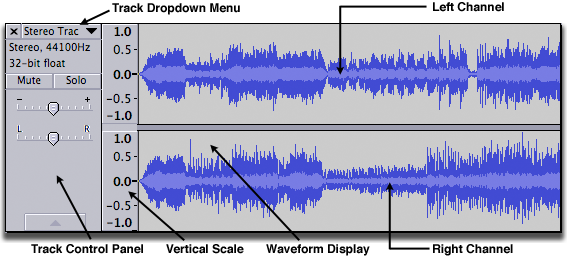
- To change the default View Mode that all tracks show when created, use Tracks Preferences.
In a stereo track, all editing actions on the track are applied identically to both channels, though some effects may treat each channel differently. For exaample, and by default set the peak amplitude of only the loudest channel then apply the same change in amplitude to the other channel, preserving the balance between channels. Normalize has an option to normalize left and right channels independently to the same amplitude if this is required. See Amplify and Normalize for more details.
Single Audio Track (Mono, Left or Right)
A single audio track has the same components as a stereo track with a single waveform and vertical scale rather than two. This can be easily seen if using "Split Stereo Track" in the Track Dropdown Menu to split the stereo track into two single tracks. The same menu can make single tracks mono, left or right. Each single track can be separately selected and thus edited independently from other tracks.
- 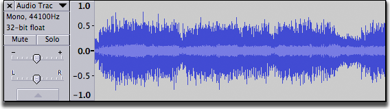
Track Control Panel
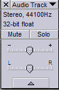 The Track Control Panel at the left of the audio track has controls and status indicators for this track. Left-clicking other than on a control performs track selection and move as follows.- Clicking selects all this track's audio, deselecting all other tracks.
- Holding SHIFT while clicking selects all this track's audio, keeping already selected tracks selected.
- (keyboard: use UP or DOWN to give the track focus, then ENTER to select it; hold SHIFT then use UP or DOWN to extend selection into another track. Read keyboard selection for more).
- Click-and-drag moves this track up or down when there are other tracks (keyboard: choose one of the "Move Track" commands in Audio Track Dropdown Menu, opened by SHIFT + M on the currently focused track ).
Controls
- Close Button:
- Clicking this button will close the track, removing it from the project.
- Clicking the track name or using SHIFT + M on the currently focused track opens the Audio Track Dropdown Menu giving options that affect this track only. Newly created tracks are named "Audio Track". Options in the dropdown menu include changing the name or sample rate, how the track is displayed, splitting a stereo track to single left, right or mono tracks and swapping stereo channels.
- Mute Button:
- Click to silence this track when playing. By default, the track will only be silenced if no Solo buttons are depressed. Click again to unsilence. Tracks on which the Mute button is pressed are never exported.
- Solo Button:
- Click to play just this track. Click again to release the button. Whenever playing audio, Solo takes precedence over Mute by default - the Mute buttons have no effect whilst any Solo button is down. There are two other options for Solo button behaviour in the Tracks Preferences. One of these is to remove the Solo button, leaving only a Mute button.
- Gain Slider:
- Set the gain for this track. Hold down the shift key while dragging to adjust the slider in finer increments. Double-click the slider to bring up a window where you can make precise adjustments or enter a gain value.
- Pan Slider:
- 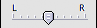 To make signal stronger on left or right earphone. Hold down the shift key while dragging to adjust the slider in finer increments. Double-click the slider to bring up a window where you can make precise adjustments or enter a pan value.
- Track Collapse Button:
- Click on this to make the track 'fold up' into a smaller size. Click again, or drag the lower edge of the track to restore the size.
Status Indicators
- Track Information Area:
- 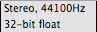 Gives the following information for each track:
- Stereo or Mono
- The sample rate in Hz
- The sample format or bit depth. An imported file will show the bit depth at which the file was imported (as per your choice in Quality Preferences), not the actual bit depth of the file.
- Sync-Lock Indicator:
- When present, indicates that this track is part of a Sync-Locked Track Group.
Vertical Scale
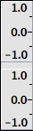 The vertical scale displays amplitude when showing the waveform, frequency when showing the spectrum or is empty when displaying pitch. The amplitude scale shown is the default linear scale, with 1.0 being the maximum value of positive signals and -1.0 the maximum of negative signals. If the display is changed to Waveform dB in the Audio Track Dropdown Menu, the scale shows dB values for positive signals only, ranging from maximum 0 dB to the minimum dB level set in Interface Preferences. When the mouse pointer is over the scale it changes to a magnify icon.
- Left-click in the Vertical Scale for any Waveform or Spectrogram view to zoom in. The range displayed on the scale will be centered at the value you clicked at. Left-click and drag a region up or down then release to zoom into that region.
- Hold Shift and left-click (or use unmodified right-click) to zoom out progressively.
- Hold Shift and right-click to zoom out and return to normal zoom level in one step.
This is a zoom in the vertical direction, as opposed to a horizontal zoom on the Timeline. See Zooming for more details of vertical and horizontal zooming.
Splitting and Joining Tracks
Using the Audio Track Dropdown Menu you can:
- split a stereo track into separate tracks for left and right channels
- split a stereo track into two separate mono tracks
- swap the channels in a stereo track
- join two mono, left or right tracks into one stereo track.
For example, here is a project with two mono tracks:
- 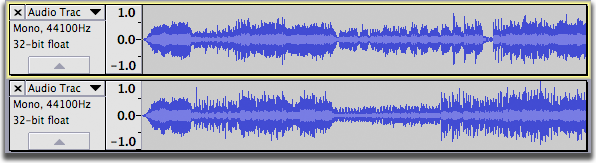
After selecting "Make Stereo Track" from the Track Dropdown Menu on the upper track we get one stereo track:
- 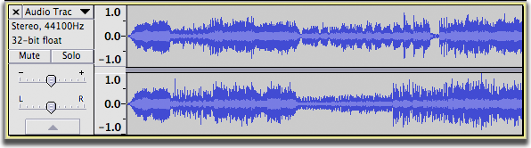
For more information please see Splitting and Joining Stereo Tracks.
Display
Changing the height of the channels in a stereo track: Click and drag between the channels.
- 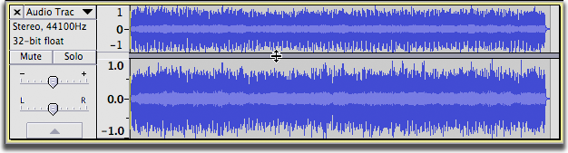
Changing the height of a track: Click and drag between the tracks.
- 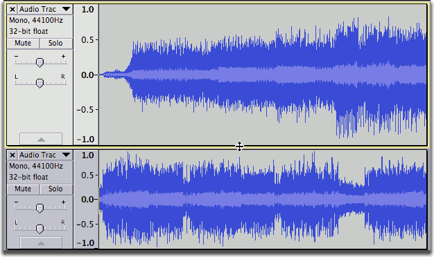
Arrows at the start of the track: This indicates that there is audio data in the track before the track start.
- 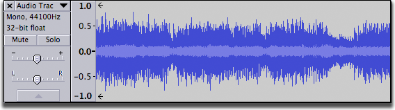
Working with Audio Tracks
For more information on working with audio tracks, see:
- Audacity Selection: the special characteristics of audio selection and the tools Audacity provides to help you make exactly the selection you need
- Audacity Tracks and Clips: all about clips - separate, movable regions of audio within a track
- Sync-Locked Track Groups: keeping a group of tracks in sync
- Zooming: seeing what you need to see